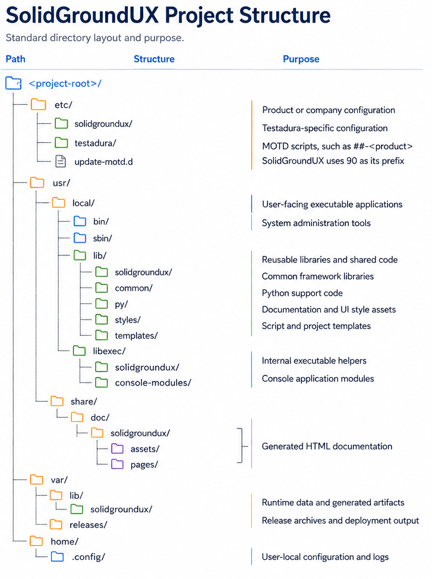

SolidGroundUX projects follow a standardized directory structure.
While individual projects may add folders as needed, the framework expects a number of well-known locations. The typical workspace structure mimics the expected deployment layout, making it easier to transition from development to deployment without reorganizing files.
The deployment tools depend on this structure to determine which files to include and where to place them during deployment. The structure also helps ensure that generated documentation, metadata, and supporting assets are maintained consistently across projects.

Executable applications are typically placed in bin and sbin, reusable libraries in lib, and internal implementation helpers in libexec.
This separation helps distinguish public interfaces from internal implementation details and keeps larger projects maintainable.